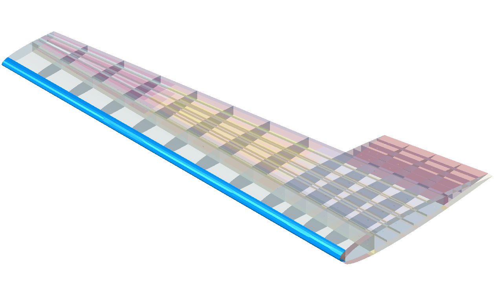

Many structural implementations are possible to dissipate the kinetic energy of the bird to protect the internal assemblies. From thickening layups in the vicinity of the leading edge to adding metal plates inside of the layups or implementing V shaped deflectors. The simplest solution was first tested which was implemented as a D shaped spar like the ones seen on helicopter blades. It was planned to test multiple D-Spar thicknesses and maybe other configurations but during tests it showed that the minimal D-Spar configuration with only 1 mm thickness was adequate on completely stopping the bird to penetrate the wing.
The bird was modelled using Smoothed Particle Hydrodynamics (SPH) which is a meshless numerical method appropriate for applications involving extreme deformations. It consists of discretizing the body with individual particles (PC3D elements in Abaqus, by default one element equals one particle). Method is based on pure Lagrangian modelling scheme for each particle. Relevant physical properties are calculated for each particle as an interpolation of the values of the nearest neighbouring particle(s) and then the particle responds according to these neighbouring states. Beyond engineering applications, SPH method has been proven useful in physics as well - gravity currents, wave propagations, free surface flows, etc.
Bird material was defined using Mie-Gruinesen Equation of State model which provides a hydrodynamic material model in which the materal's volumetric strength is determined by an equation of state. Specifically Us-Up Hugoniot form was used which constants c0 (speed of sound) and s define the linear relationship between the linear shock velocity Us>, and the particle velocity Up. One more property is needed and that is Gruneisens ratio, Γ0 . Bird material properties are found in the table below.
Leading Edge Reinforcement

0 deg - Hashin Matrix Tensile Failure Index

0 deg - Hashin Fiber Tensile Failure Index

0 deg - Matrix Tensile Damage

0 deg - Fiber Tensile Damage

45deg - Hashin Matrix Tensile Failure Index

45deg - Hashin Fiber Tensile Failure Index

45deg - Matrix Tensile Damage

45deg - Fiber Tensile Damage

0 degree impact

45 degree impact